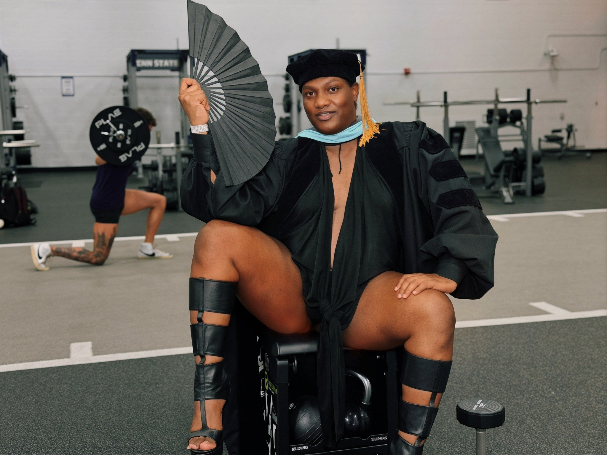

Interrogating power
Intersectionality, trans* of color critique, decolonial inquiry, the whiteness agenda, and the coloniality of transness shape how I theorize learning, embodiment, and social power.
RESEARCH · POSITIONALITY · PRAXIS
My research centers intersectionality in understanding learning as embodied, relational, and situated within sociocultural, historical, and sociopolitical systems of power.

THE PRESENCE OF THE SELF
I understand my positionality not as an aside to scholarly inquiry, but as integral to the questions I ask, the relationships I cultivate, and the knowledge I produce.
My experiences as a mixed-Black, gender- and sexually diverse, first-generation scholar of international origins, navigating socioeconomic inequity and disability, inform my commitments to intersectional and reflexive inquiry. I approach these experiences not as universal standpoints, but as situated perspectives that demand continual attention to power, context, and the limits of my own knowing.
My embodied experience as a trans* recreational powerbuilder further shapes how I understand bodies as sites of learning, identity negotiation, and self-determination. The body, in this sense, is neither a passive object of study nor separate from the historical and political conditions through which it becomes intelligible.
THE QUESTIONS I PURSUE
My research examines trans* bodybuilders and the ways bodies become sites through which gender and sexual identities are learned, negotiated, expressed, and contested. I am particularly interested in how self and other are constituted through embodied practices and the broader social relations surrounding them.
My scholarship attends to the dialectical relationship between two interwoven paradigms:
These are not discrete or equally positioned opposites. Rather, they are relational dimensions of lived experience and political struggle, continually shaped by historical and contemporary sociopolitical conditions. I examine the structures through which violence is enacted alongside the practices through which trans* people assert agency, cultivate knowledge, and advocate for their existence.
THEORY · METHOD · EMPIRICAL WORK
I pursue multi-method inquiry across interconnected theoretical, methodological, and empirical dimensions. These dimensions inform one another rather than functioning as isolated stages of research.
Intersectionality, trans* of color critique, decolonial inquiry, the whiteness agenda, and the coloniality of transness shape how I theorize learning, embodiment, and social power.
My methodological commitments include portraiture and autotheory, with reflexivity and the researcher's situated presence central to knowledge production.
My empirical work explores trans* athletic bodies, identity learning, and the sociocultural and sociopolitical conditions that shape embodied experience.
This page is a narrative overview. Specific projects, publications, and methodological contributions will be cross-linked as the full Version 3 site is developed.
RESEARCH IN PUBLICATION
PEER-REVIEWED JOURNAL ARTICLE
Malcolm, B. · International Journal of Qualitative Studies in Education
PEER-REVIEWED CONFERENCE PROCEEDING
Malcolm, B. · International Conference of the Learning Sciences
The full bibliography, including peer-reviewed journal articles and conference proceedings, will be presented on the Scholarship page.
CONTINUE THE CONVERSATION
Explore my academic and professional experience in greater detail.